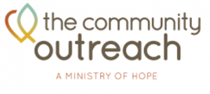
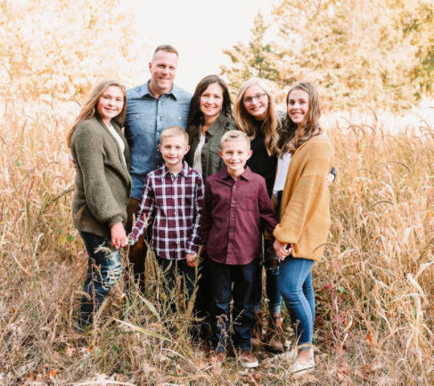
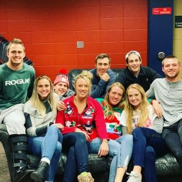

Hope Coalition

The Sioux Falls Hope Coalition focuses on narrowing the achievement gap in our community through one simple strategy: Ensuring that every child gets a chance to attend preschool. Supported by business leaders, the United Way, and nonprofits, the coalition is seeking to place children currently on a waiting list for subsidized preschool into existing, high quality faith-based programs.
Learn more about Hope Coalition
Central’s Involvement: Central Church Downtown Preschool is partnering with the Sioux Falls Hope Coalition to provide educational opportunities for all children in the Pettigrew Heights community, regardless of their family’s financial situation.
Downtown Preschool
How You Can Get Involved: Central Church Downtown Preschool has a variety of different options for volunteering. We need bus riders, classroom, lunch, and field trip helpers. To find out more, contact Jessi Copeland at
jessi.copeland@centralsf.org
Donate Here
Hope Harbor

Hope Harbor offers family-style care for teens as they heal from a variety of issues that are unfortunately commonplace for youth today. These include past abuse, trauma, anger, substance use, mental health issues, exploitation, self-harm, suicidal ideation, anxiety, attachment issues, and more. They work with ordinary kids who are healing from extraordinary things; each one a child of God, loved by the Savior.
Learn more about Hope Harbor
Central's Involvement: The Kingdom Fund and Elders voted to use Central’s tithes and offerings to help Hope Harbor with innovative staff trainings and ongoing ministry costs in 2023.
How You Can Get Involved: Hope Harbor’s Parker facility is large and is always in need of all kinds of volunteers. To find out more, reach out to the Site Director Amanda Dent at
amanda.dent@hopeharbormn.org
Donate Here
Grace Team Jail Ministry
Grace Team Jail Ministry is a South Dakota based ministry through Converge Heartland, whose mission is to share the hope of the gospel with inmates and staff at the prisons and jails we serve. They are currently in seven facilities throughout the state of South Dakota.
Learn more about Grace Team
Central's Involvement: Central Church makes a monthly donation to help cover supplies and staffing costs.
Serve Here
Donate Here
Lifeline Children’s Services

Lifeline Children’s Services of South Dakota equips the body of Christ to manifest the gospel to vulnerable children, women, and families. Lifeline helps the church live out God’s call in James 1:27 to “care for orphans and widows in their distress” in these areas: adoption, pregnancy ministry, global orphan care, and family preservation.
Learn more about Lifeline
Central's Involvement: Central Church makes a monthly donation to help cover supplies and staffing costs. We also provide volunteers for their Harbor Families ministry.
How You Can Get Involved: Lifeline has a variety of different options for involvement in the areas of adoption, respite care, and support care. To learn more contact
Chuck Jespersen, Director.
Donate Here
Renewal 58

Renewal 58 is a non-profit that focuses on buying distressed properties in Pettigrew Heights, refurbishing them, and renting them out at a rate that is affordable for lower income people. When residents join the program, they will be paired with a case worker and a mentor to help them work through challenges they face in order to improve their quality of life. Their model serves both the people in the homes and improves the neighborhood of Pettigrew Heights. As of now, Renewal 58 has 21 units across seven properties.
Read more about Renewal 58
Central's Involvement: In 2021 Central provided the funds to buy a 10 unit home in Pettigrew Heights. The church invites these and other Renewal 58 residents to several events per year, and provides other enriching opportunities through Central Renewal. (Find out more about Central Renewal on the page below.)
How You Can Get Involved: Renewal 58 periodically needs volunteers to do yard work and maintenance on the homes. To find out more or get involved contact
Nathan Pruett, Outreach Pastor.
Call to Freedom

Call to Freedom brings wholeness to all individuals impacted by sex and labor trafficking and commercial sexual exploitation by navigating a healing path
through their continuum of care model.
Learn more about Call To Freedom
Central's Involvement: In 2021, The Kingdom Fund and Elders approved a $100,000 gift to Call to Freedom to help with the building of the Marissa House. This home allows women coming out of trafficking to have a safe and supportive home environment with their children.
Serve Here
Donate Here
ResGen

ResGen exists to present the Good News of Christ to thousands of people and help them follow Him for a lifetime. Since 2010, ResGen has impacted over three hundred thousand people at conferences, schools, festivals, and other events across the country. They also host several annual events in Sioux Falls, including the ResGen Men’s Summit, Date Night Comedy, and a parenting event.
Learn more about ResGen
Central's Involvement: The Elders voted in 2021 to give a one-time gift to ResGen to help them with startup costs for their Podcast ministry. Men’s Summit and Date Night Comedy are hosted at Central Church.
Contact Jeff Nelson to Serve
Donate Here
MKA
No blurb :(
The Timothy Initiative
The Timothy Initiative (TTI) exists to advance Christ’s Kingdom by multiplying disciples and disciple making churches around the world. It's our vision to see multiplying, disciple making churches in every place and people group.
In 2023 Central attendees, in conjunction with The Kingdom Fund, sponsored the planting of 1,400 churches in unreached areas of Ethiopia.
Ukraine
In 2022, The Kingdom Fund and the Elders gave a financial gift of $25,000 for food and care for Ukrainian pastors in response to the crisis in Ukraine caused by the Russian invasion. We did this in conjunction with other Converge Heartland churches from our area.
Learn more about Converge Heartland
Shamida
Shamida exists to provide high quality holistic care for orphans and vulnerable children, families, and the community. Shamida has two facilities. One home has existed for about 10 years and has about 30 children, many of whom are children with disabilities. They also, more recently, joined in collaboration with the Ethiopian government to provide care for the 125+ children at Kebebe Tsehay.
In 2022 The Kingdom Fund and the Elders approved a gift of $108,000 to purchase an industrial generator, dishwasher, and washer and dryer for use at Kebebe Tsehay.
Selamta

Every child deserves the love of a healthy family. But children who have been orphaned or abandoned are often alone, separated from siblings, and left to fend for themselves in orphanages or on the street. Selamta recreates and empowers families so these children can grow up knowing their God-given dignity and worth, healing generational brokenness, and transforming lives. Selamta’s holistic, community-integrated, permanent approach brings children from institutions and the street into the loving arms of a healthy family where hope and healing are found.
In 2022 The Kingdom Fund and the Elders approved the sponsorship of a Forever Home at the amount of $3,000 a month. Forever homes are made up on one mom and eight previously homeless or abandoned children.
Empower (Fair Market)
Fair Market is not your typical grocery store. Their slogan is to “Make food affordable and accessible in a sustainable way.” They do this by providing healthy food options at reduced rates in “food deserts” within the city of Sioux Falls.
Read more about Fair Market
Fair Market 2512
Central's Involvement: In 2022 The Kingdom Fund and the Elders approved a gift of $82,000 to help Empower open Fair Market West to end a “food desert” that had appeared in Sioux Falls with the closing of the Hy-Vee on Kiwanis.
To get involved at Fair Market you can message them on their
Facebook page or stop by one of their two locations.
SHIFT Garage

Shift Garage exists to help those they serve to fully realize the plan Jesus Christ has for their lives. They do this through a combination of vehicle repair, vehicle donation, and maintenance classes.
Learn more about SHIFT Garage
Central's Involvement: In 2022 The Kingdom Fund and Elders approved a gift of $125,000 to allow Shift Garage to move to a more accessible location, expand their services, increase advertising, and hire a full-time mechanic.
How You Can Get Involved: SHIFT Garage is always looking for volunteer mechanics and Lobby Hosts. To find out more contact
Joe Smith, Founder.
Donate Here
Collision
Collision’s mission is to equip students to become faithful followers of Christ who share the gospel, multiply, and transform their schools and the world around them. With that, they are connecting and working with local churches to partner with Christ-following middle and high school students. They empower students through mentoring, training, and other resources to help equip them to share the hope of Christ in their schools and with their peers.
Learn more about Collision
Central's Involvement: In 2023 The Kingdom Fund and Elders approved a gift of $25,000 to help Collision expand its programs into previously under-reached areas here in Sioux Falls.
Serve Here
Donate Here
The Naomi Project

The Naomi Project’s vision is for a just and fair future for all workers in South Dakota. They have an emphasis on connecting with workers who are experiencing labor trafficking, building relationships of trust, and moving forward in reporting abuses to law enforcement while supporting impacted workers with direct services.
Learn more about The Naomi Project
Central's Involvement: In 2023 The Kingdom Fund and the Elder board approved a one-time financial gift for The Naomi Project of $70,000, so that they could hire two part-time Case Managers to better serve their clients.
How You Can Get Involved: If you are bilingual (primary need is Spanish) we are in need of mentors for clients, translators during appointments, and translators for documents. If you have connections with business owners in the food/construction industries, help us connect to provide trafficking awareness. Contact
Jordan Bruxvoort, Director, for more.
Donate Here
The Gathering Well

The Gathering Well supports, educates, and inspires adoptive and foster families with relevant connection opportunities and resources. We recognize Jesus Christ as the source of hope and healing, and believe that no one should be on this journey alone.
In 2023 The Kingdom Fund and the Elders approved a gift of $12,000 to help The Gathering Well continue to serve its ever growing client base.
The Banquet
The Banquet’s mission is to provide a welcoming place where people can gather, receive nourishment and experience love in action, and assist volunteers in providing food and fellowship to those served through the ministry of The Banquet. They are vigilant in identifying and fulfilling the needs of the hungry in our diverse community and in encouraging the health and wellness of their guests.
The Community Outreach
Community Outreach’s mission is to partner in Christian ministry to share hope and provide tools for daily living. They do this through a mixture rent assistance, case management, mentoring, and life skills training.
Lifelight
Lifelight’s vision is to “take the Church outside the walls” to reach the lost, bring the body together to accomplish the great commission, and challenge the body to get involved in ministry. This ministry involves many church denominations, working together in unity based on the truth of God’s Word and the essentials of the Gospel.
TIM AND SHEILA STEELE

Tim and Sheila Steele serve as a Divisional Manager and Operations for Live Events for FamilyLife, a division of the interdenominational, parachurch Cru, which focuses on marriage, parental ministry. The mission of this ministry is to equip and develop Godly marriages and families to change the world. Beyond this ministry, Tim and Sheila mentor and disciple married couples and lead other FamilyLife events.
HEATHER CARR

Heather Carr works with Cru. She has been with this ministry for 28 years working on college campuses in the US and in East Asia with the desire to see college students have a chance to know someone who truly follows Jesus.
Her current position is the Mission Director helping give leadership to our college ministries in the midwest. They are called “Cru Heartland” which includes 10 teams across 6 states- North Dakota, South Dakota, Iowa, Missouri, Kansas, and Nebraska. Each team consists of anywhere from 4-20 staff and all of our teams are reaching out to at least 4 schools with our metro teams reaching up to 30. She comes alongside the team leaders to coach them as they lead their teams to grow closer to the Lord and in the mission where God has called them to go.
LUKE AND JEN OLSON
No Blurb :(
JEFF AND MELISSA WADDELL
Jeff is teaching people in developing nations how to get safe drinking water using simple and affordable approaches. Melissa is providing healthcare education both for staff, students, and those in developing nations.
TED AND JEAN MILLER

Ted uses his skills and experience in radio station technical operations to support Christian radio stations outside the USA. In addition, he works on designing unique equipment that our partner ministries need, but can’t buy. His two biggest projects right now are working with a studio upgrade for Radio Lumiere in Port-au-Prince, Haiti, and a project designing a special kind of electrical equipment protector that will allow people to continue using electronic equipment, even when the electrical voltage is too high. Jean works as a bookkeeper in the accounting department, keeping up with the many financial transactions needed to facilitate the equipment shipments and other support that SonSet Solutions, Inc., gives to hundreds of radio stations.
DAVE AND CAROL

Dave serves as the International Director of Asia, with Converge, while being located in Minnesota with his wife Carol. They are working to bring about a gospel-movement among the least-reached peoples of Asia, laying strong foundations for global workers, building bridges with national partners, and opening doors to new areas of work. Their vision statement for all their workers worldwide is asking God for a gospel movement among every least-reached people group in our generation.
Emmanual Disability Association and Workshop
The Emmanual Disability Association and Workshop located in Soddo, Ethiopia is often the only option. Melese Eyob, a founder of the association and workshop makes dreams a reality for disabled Ethiopians.
Melese knows these struggles firsthand. He has had Polio since childhood and lived on the streets himself, until he was helped by Soddo Christian Hospital 15 years ago with surgery. Even with the surgery, he cannot get around without crutches. He started the association and workshop due to the dire need of medical supplies and job opportunities for the disabled. The workshop not only improves the lives of those they serve, but also those that they employ. Most of the employees are disabled, many of whom were living on the street before being offered shelter, training, and a job by Melese. He and his team work tirelessly with the minimal supplies available to them.
Adams Thermal Foundation
No Blurb :(
Five Indigenous Ethiopian Missionaries
Central Church sponsors five indigenous missionaries in the country of Ethiopia who work for New Life International Joshua Ministry. The work is hard and dangerous, but these individuals have committed their lives to seeing people come to know Jesus in unreach parts of Ethiopia.
Sioux Falls Legacy Partners:
MANDY BUDIG
Having been in education for over twenty years, Mandy Budig is passionate about students and coaches. Having been impacted personally by FCA on Augutana’s campus over 20 years ago, she is excited to now have the opportunity to join the FCA staff. She has witnessed how our youth are under attack and she is honored to support middle school students, high school students, and staff as they seek to strengthen their walk in the Lord. Mandy will be serving the schools in southeastern South Dakota. She will be helping to start and support huddles on middle school and high school campuses, bringing the Word of God to the students and coaches right on their campus.
LARRY AND MARY CALDWELL

Larry and Mary Caldwell are missionaries with Converge. They lived in Asia off and on across three decades, with their last 21 years in Manila, Philippines. There, Larry was a Professor and Academic Dean at Asian Theological Seminary, while Mary taught ESL to the children of missionaries at Faith Academy. In 2011 they returned to the USA. Larry became the Director of Training and Strategy for Converge International Missions, as well as Chief Academic Officer and Dean, and Professor of Intercultural Studies and Bible Interpretation, at Sioux Falls Seminary. Mary became a Missionary Assessment Advisor for Converge, as well as an ESL teacher to refugees and immigrants in partnership with Lutheran Social Services and the Center for New Americans.
GREG FRIESNER

Greg is the Director of Incarcerated ministries with Converge Heartlands. He works in the Minnehaha county jail and is also the Pastor of Prison Lighthouse Fellowship.
JUSTIN AND DANIELLE
Justin and Danielle work for the Jesus Film Ministry to help bring the gospel to people in their heart language. There are 6,500 languages in the world yet the Bible says that every tribe, tongue, and nation will hear the good news…How is this possible? Their goal is to help translate the gospel of Luke, and dub it into the Jesus Film, so that no one has to learn a new language in order to hear about Jesus. It’s illegal to be a Christian in the countries that they work in, so for security reasons, please reach out to Central’s staff to contact this couple.
TOM HENDERSON
Over the last 10 years, Tom Henderson, founder of Restoration Generation, has spoken to over 250,000 people across the country at conferences, festivals, schools and other events with one mission in mind: Restoring generations of relationships – with God and with each other.
In Sioux Falls, Restoration Generation hosts the annual Res Gen Men’s Summit which encourages and equips over 1000 men to pursue Christ, lead their families and live out their faith in the workplace. Res Gen also hosts 2 Date Night Comedy marriage events each year, a parenting conference and monthly youth leader luncheons that unites youth workers around the common mission of reaching teens and families for Christ.
DUSTY AND ALLISON HOFFMAN
Dusty and Allison work for Central’s church planting partner, The Timothy Initiative. Dusty is focusing his time on strategic leadership within these two countries, solving problems, removing log jams, and mobilizing and casting vision to make sure the project stays on track. Allison is using her gifts in the area of conference and event planning to accelerate the effort.
DESI KROHN
Desi has served with Cru (Campus Crusade for Christ) for over 10 years now. Cru is about helping every student on campus come to know Christ, be built up in their faith, and then sent out to teach the world with the good news of the Gospel. Desi lives that out in two ways- first by serving on the 7 campuses the local SD team works on- SDSU, USD, DSU, LATI, NSU, MTI, & WIT. While there, she leads a bible study of women, disciples students one on one, and shares the Gospel on campus. Desi is also the program director of a Cru Winter Conference that hosts close to 1000 students every winter in Minneapolis MN.
HARLAN MOSS
Harlan’s Prison Ministry started in 2007 where he began raising his own funding for his evangelism mission. As a prison chaplain, he has the privilege of sharing the Gospel with the inmates. His mission is to lead men to Christ. He lives this out by leading counseling sessions and bible studies with the men in Sioux Falls’ local prison. He pours his heart out to these men as he disciples them to live out their lives as faithful men of Christ.
LINDSEY WAGGONER
Fellowship of Christian Athletes (FCA) is on the campus of Augustana University, where Lindsey serves as a full time staff person. She works to develop relationships with coaches and athletes to help them know Jesus as their personal Lord and Savior. She establishes ministry on campus through relationships, groups, and events, so that every ear can hear the name of Jesus. On a regular basis, she disciples students/coaches, leads bible studies, feeds coaches and athletes, attends practices and serves as a team chaplain.